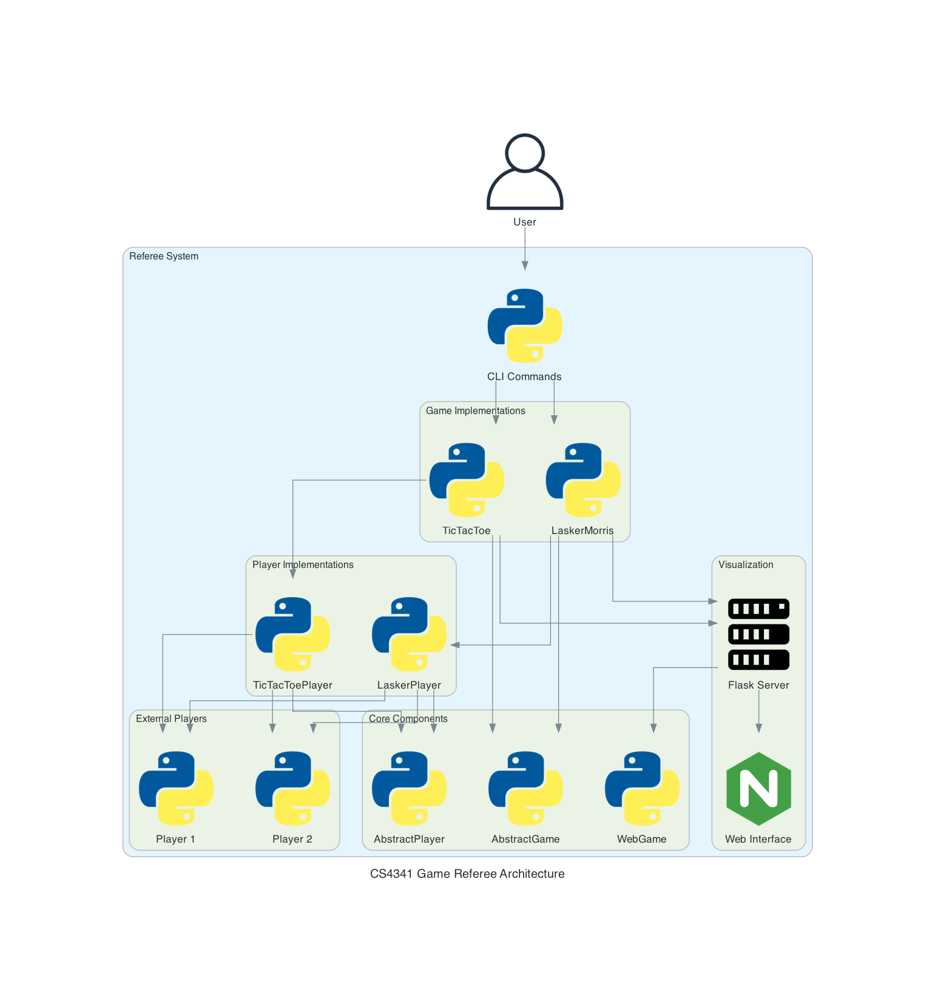

Architecture¶
The CS4341 Game Referee system follows a modular and extensible architecture that allows for easy addition of new games and features. This document provides an overview of the core architectural components and how they interact.
Core Components¶

Abstract Base Classes¶
The system is built around three key abstract base classes:
AbstractPlayer¶
The AbstractPlayer class manages communication with external player processes:
class AbstractPlayer(ABC):
def __init__(self, command: str, log: bool = False, debug: bool = False):
# Initialize player process information
def start(self) -> None:
# Start the player process
def write(self, data: str) -> None:
# Write data to the player process
def read(self) -> str:
# Read data from the player process
def stop(self) -> None:
# Terminate the player process
This class handles:
- Starting and stopping external player processes
- Reading and writing to player processes via stdin/stdout
- Error handling for process communication
AbstractGame¶
The AbstractGame class defines the core interface for all game implementations:
class AbstractGame(ABC):
def __init__(self, player1: AbstractPlayer, player2: AbstractPlayer) -> None:
# Initialize game state
@property
def current_player(self) -> AbstractPlayer:
# Return the current player
def switch_player(self) -> None:
# Switch to the other player
@property
def is_game_over(self) -> bool:
# Check if game is over
@abstractmethod
def initialize_game(self) -> None:
# Initialize game state
@abstractmethod
def make_move(self, move: Any) -> bool:
# Process a move and update game state
@abstractmethod
def determine_winner(self) -> Optional[AbstractPlayer]:
# Determine if there's a winner
This class handles:
- Managing the game state
- Tracking the current player
- Determining when a game is over
- Defining the interface for specific game implementations
WebGame¶
The WebGame class provides web visualization capabilities:
class WebGame(ABC):
def __init__(self, template_folder):
# Initialize web server
@abstractmethod
def get_game_state_json(self):
# Return game state as JSON
@abstractmethod
def get_index(self):
# Render web interface
def start_web_server(self, port=8000):
# Start the web server
This class handles:
- Setting up a Flask web server
- Providing endpoints for game state and visualization
- Rendering HTML templates for game display
Game Implementations¶
Each specific game implementation extends the abstract classes:
Game Class¶
Game classes like TicTacToe and LaskerMorris extend AbstractGame:
class TicTacToe(AbstractGame):
def __init__(self, player1_command: str, player2_command: str, ...):
# Initialize game-specific state
def initialize_game(self) -> None:
# Set up board and start players
def make_move(self, move: str) -> bool:
# Validate and execute move
def determine_winner(self) -> Optional[TicTacToePlayer]:
# Check for winning conditions
Player Class¶
Game-specific player classes extend AbstractPlayer:
class TicTacToePlayer(AbstractPlayer):
def __init__(self, command: str, symbol: str, log: bool = False):
super().__init__(command, log)
self.symbol = symbol
def get_symbol(self) -> str:
return self.symbol
Web Interface Class¶
Game-specific web interfaces extend WebGame:
class TicTacToeWeb(WebGame):
def __init__(self, game):
super().__init__(GameConfig.WEB_TEMPLATE_FOLDER)
self.game = game
def get_game_state_json(self):
# Convert game state to JSON
def get_index(self):
# Render game template
Command Line Interface¶
The CLI layer provides a user-friendly interface to access the game functionality:
@click.command(name="tictactoe")
@click.option("--player", "-p", ...)
def start_tictactoe(player, player2, ...):
# Create and run TicTacToe game
Communication Flow¶
The typical flow of communication in the system is:
- User starts a game via CLI
- CLI creates game instance with player commands
- Game initializes and starts player processes
- Game sends initial state to players
- Players respond with moves
- Game validates moves and updates state
- Web interface displays current state
- Game determines when the match is over
Extension Points¶
The system is designed to be easily extended at several points:
- New games: Create new classes that implement
AbstractGame - New player types: Create new classes that extend
AbstractPlayer - Enhanced visualization: Extend
WebGamefor custom visualizations - Additional CLI commands: Add new commands to the CLI module
This modular approach allows for adding new functionality without modifying the core system components.